Inteligencia para ganar, gobernar y transformar.
Convertimos información pública en inteligencia accionable —mapas, modelos y salas de mando— para quien compite por un cargo y para quien gobierna un territorio.
Hoy se decide a ciegas.
El territorio produce datos cada día y casi nadie los convierte en decisiones. No se tiene el mapa de dónde está la fuerza, el riesgo y la oportunidad.
El gasto y los recursos no son transparentes. El trabajo en campo y de los líderes es difícil de auditar.
Simpatizantes sin seguimiento, avances imposibles de medir, brigadas desconectadas y agendas improvisadas.
Casillas desprotegidas, delitos electorales sin seguimiento y falta de coordinación entre abogados.
Desperdicio de tiempo, esfuerzo humano, dinero y materiales. Procesos de trabajo rústicos.
TERRAXIS existe para resolver los problemas que hacen perder campañas y desgastan estructuras.
TERRAXIS Electoral.
No competimos con ningún software. Somos un sistema integral que te acompaña todo el ciclo de la campaña —desde el diagnóstico hasta la defensa del voto— sobre inteligencia real, no corazonada.
Estrategia electoral
Donde no hay mapas inteligentes, los construimos; donde falta inteligencia, creamos decisiones con fundamento.
Transparencia
Combatimos la opacidad en campañas y recursos con transparencia verificable y registros auditables.
Orden
Ponemos orden donde hay caos operativo y damos rumbo a la desorganización territorial.
Seguridad el Día D
Cuando la jornada se vuelve descontrol e incertidumbre, devolvemos el mando y la seguridad.
Eficiencia
Alcanzamos objetivos con la menor cantidad de recursos posibles. Estructura digital para la campaña.
Capacidad técnica, no militancia · Estrictamente no partidista.
Cada territorio contiene una ventaja.
TERRAXIS la encuentra: apila capas —resultados, competitividad, dominio, estructura— hasta que el mapa deja de mostrar y empieza a decidir.
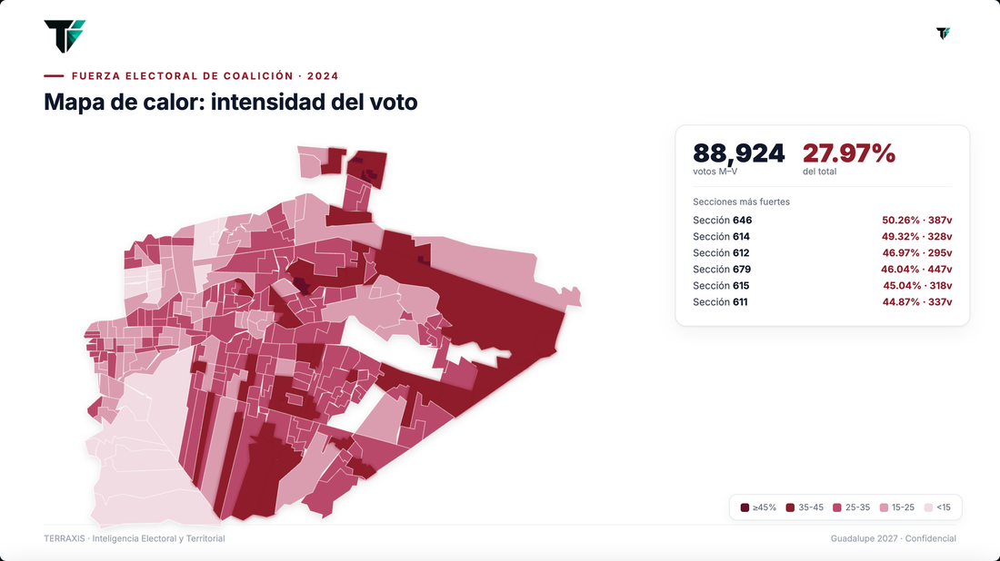

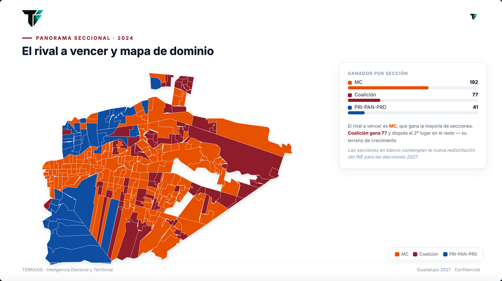
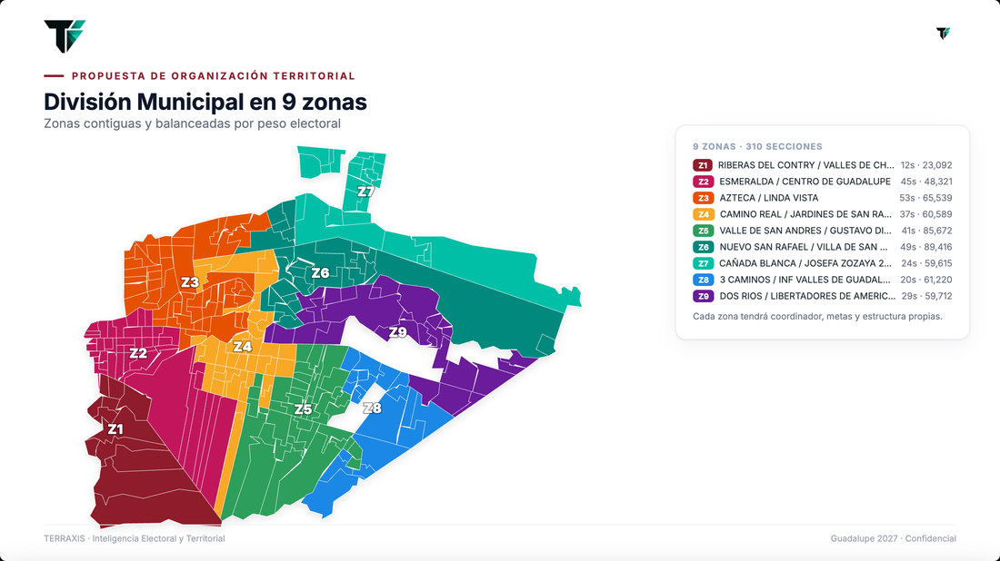
Conoce tu territorio antes de pisarlo.
De información pública a inteligencia propia, accionable y defendible.
Series y comparativos por sección; patrones, escenarios y proyecciones asistidas.
Fuerza, riesgo y oportunidad por territorio.
Priorización de secciones y de recursos.
Tablero de mando para todo el equipo.
Perfilamiento por capas con información pública (INE, INEGI, CONEVAL).
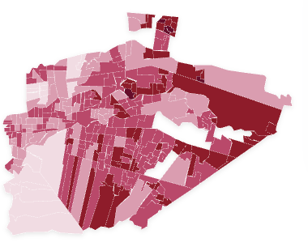
Mapa de calor por votación · 310 secciones.
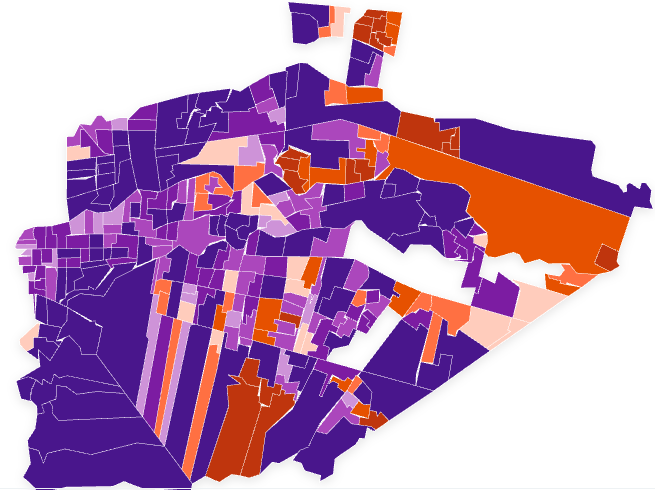
Diferencia de votos: dónde se define la elección.
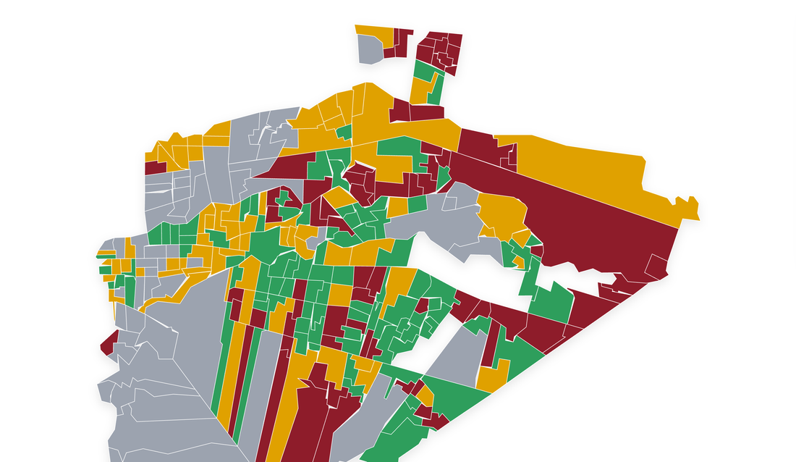
Bastión · Oportunidad · Competida · Hostil.
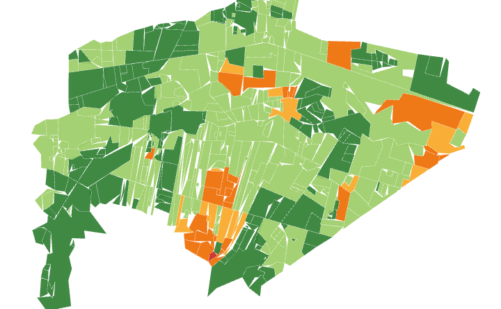
Índice de rezago social · INEGI · CONEVAL.
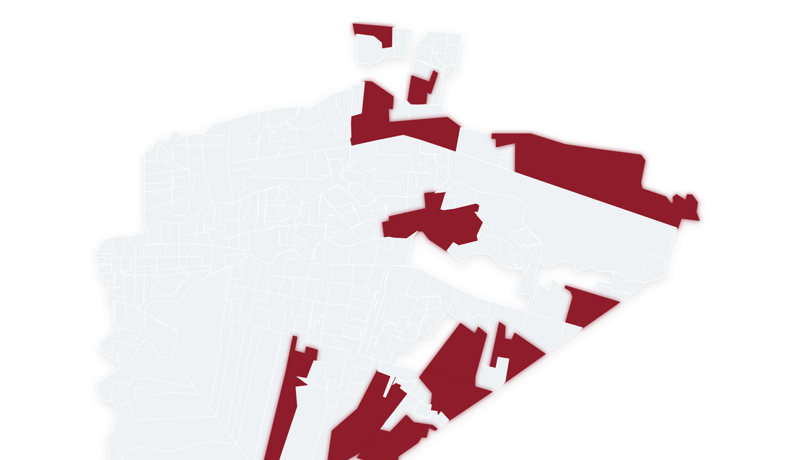
Secciones prioritarias a conquistar en 2027.
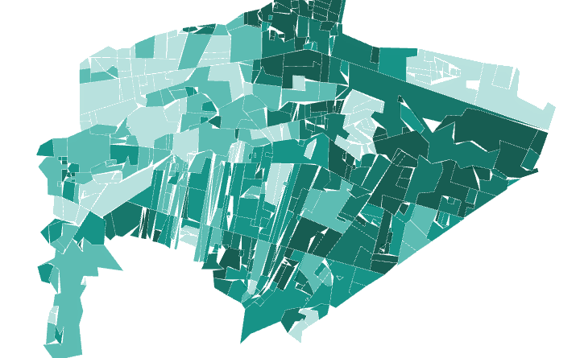
% de jóvenes 18–24 por sección · INEGI.
Donde otros suponen, tú sabes.
Historia electoral por sección, perfil del territorio y predicción convertidos en una recomendación: dónde hay voto, dónde hay riesgo y dónde invertir cada peso.
- Scoring seccional — propensión de voto y riesgo de abstención
- Mapas de calor — fortalezas, zonas frías y en disputa
- Competitividad — dónde se define la elección
- Recomendación — brigadas, recursos y agenda del candidato

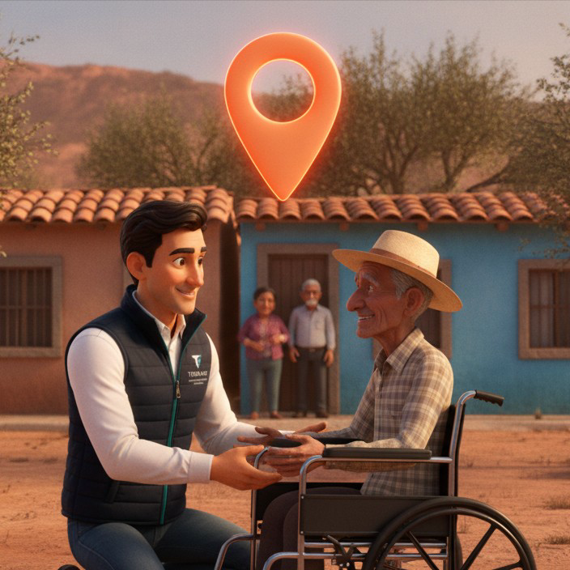
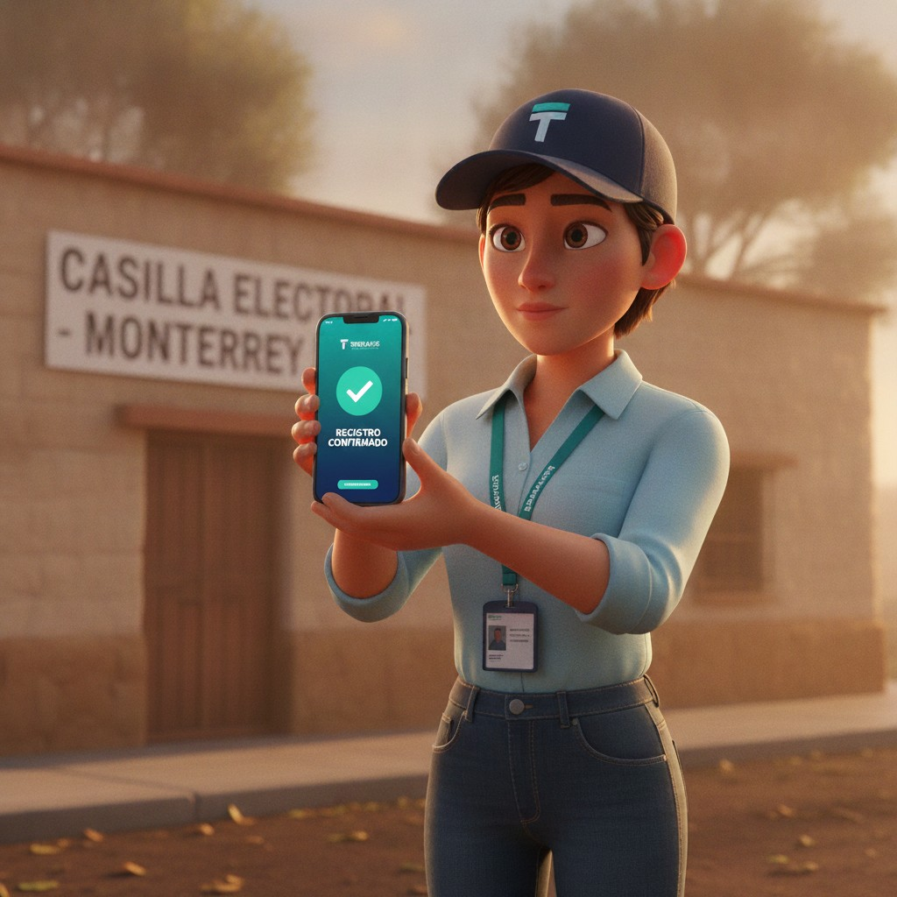
Toda tu estructura, viva y bajo control.
Del papel y el chat informal a una plataforma viva: simpatizantes, afiliados, líderes, brigadas y apoyos geolocalizados, medibles y auditables. Con procesos de verificación con IA para saber que todo se entrega.
Ejecuta la campaña con control total.
Cada evento, recurso y contacto —geolocalizado, automatizado y auditable.
Cada acto, barda, lona y gasto, ubicado y comprobable en el mapa.
Flujos y validaciones automáticas: menos errores, menos tiempos.
Recorridos y actos priorizados por impacto territorial.
Alta y trazabilidad de simpatizantes, apoyos y recursos.
Respuesta inmediata y captura de demandas ciudadanas.
Captura de contactos por foto de la credencial, con consentimiento.
Comunícate con toda tu estructura, segmentada, en un clic.
Ingresos, gastos y topes vigilados al momento.
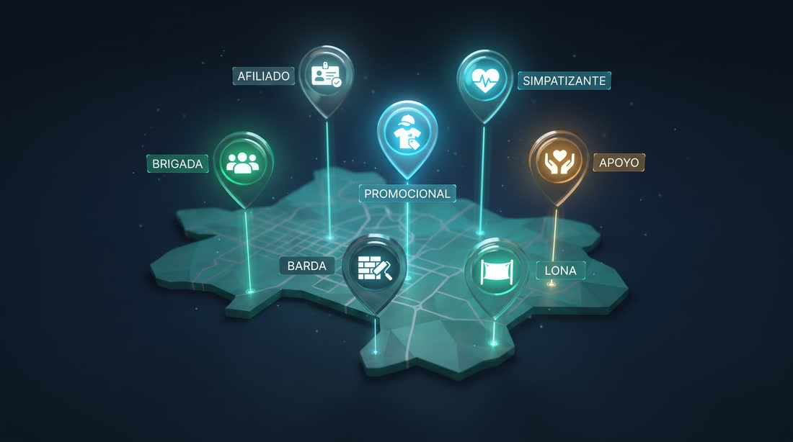
Del territorio al War Room, en segundos.
Cada evento en la calle —un check-in, una incidencia, una foto de evidencia— viaja validado y geolocalizado hasta el centro de mando, y regresa como decisión.
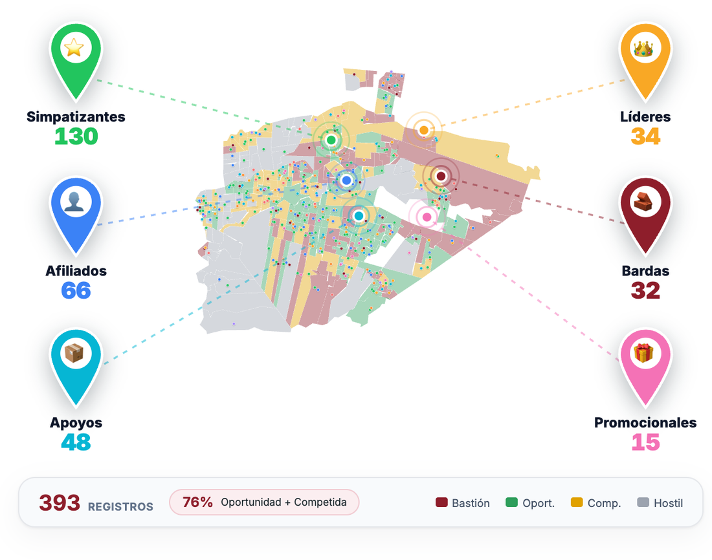
Un solo flujo, sin herramientas sueltas. Trazabilidad de punta a punta: quién reportó, dónde, a qué hora y con qué evidencia.
ChatBot de Atención Ciudadana 24/7
Un asistente con IA atiende al ciudadano al instante y levanta reportes las 24 horas. Cada demanda queda registrada, clasificada y georreferenciada, y alimenta tu inteligencia de campaña. También audita si el contacto existe y su afinidad al proyecto.
Agenda de Campaña Inteligente
Prepara la agenda con estrategia desde meses antes: objetivos por sección, actos priorizados por impacto y rutas optimizadas. Llegas al día a día con 100% de control y ajustas con datos en tiempo real.
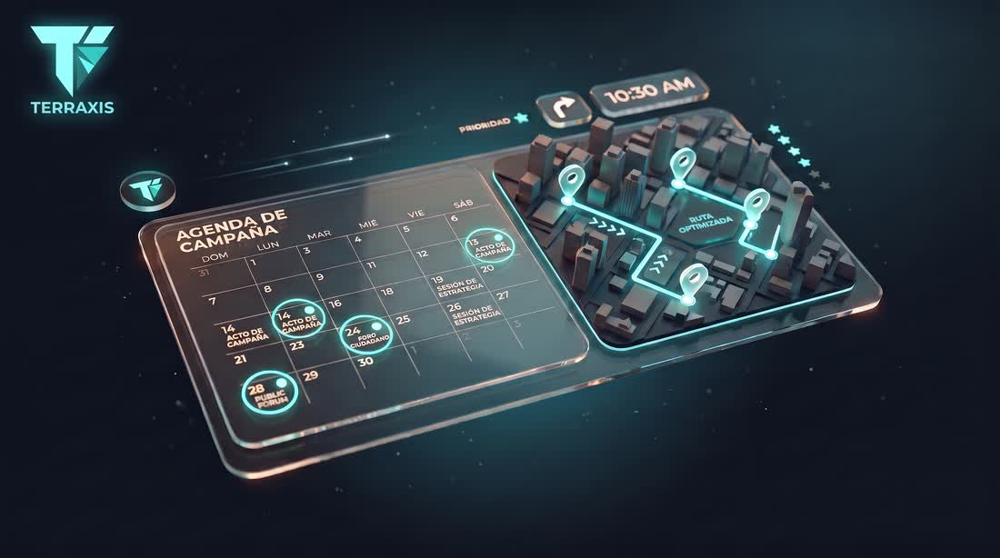
El día se gana en las primeras horas. Con todo bajo control.
El War Room concentra la jornada en una sola pantalla: velocidad, trazabilidad y capacidad de reacción cuando cada minuto cuenta.
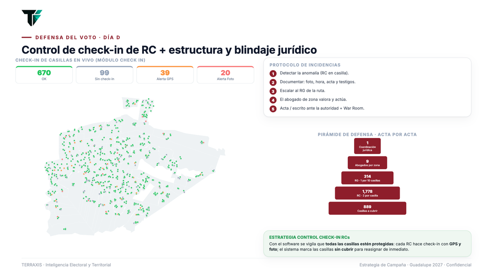
CONTROL DE CHECK-IN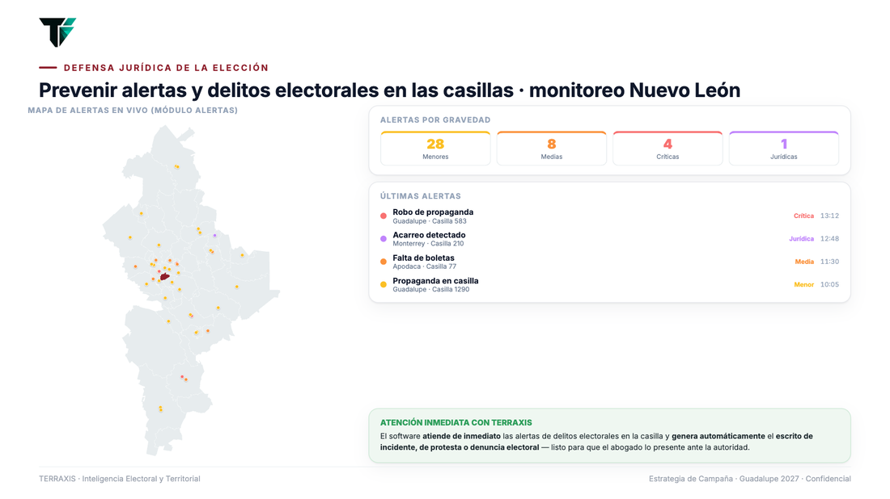
DEFENSA JURÍDICA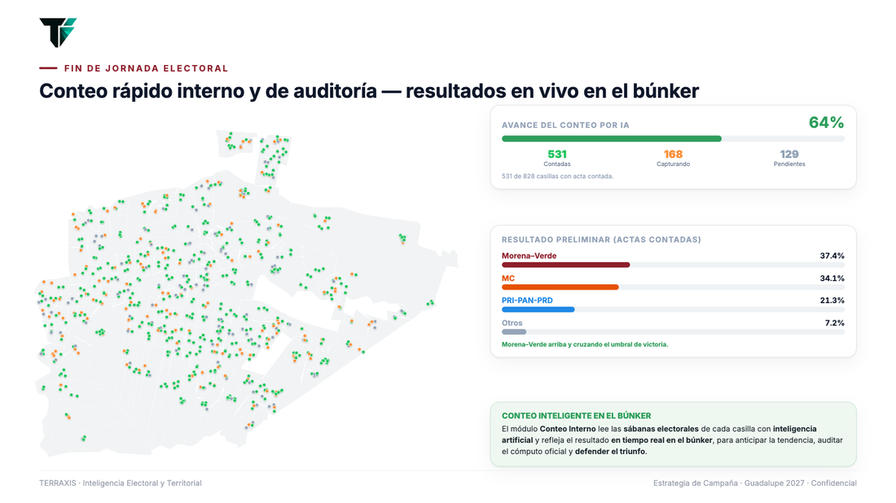
CONTEO RÁPIDOTodo tu operativo del Día D, bajo control.
Representantes, incidencias, movilización y resultados en una sola plataforma: cada casilla vigilada, cada voto defendido y cada dato capturado en tiempo real.
Check-in con GPS y foto de cada RC/RG; sabes al instante qué casillas están cubiertas.
Cada anomalía se reporta con ubicación, hora y evidencia, y escala al abogado de zona.
TERRAXIS junto con un abogado electoral arman el escrito con los datos capturados, listos para la autoridad.
Conoce con anticipación los promovidos que faltan por votar; ajusta rutas y recursos con evidencia real.
Captura y lee el acta por foto: conteo rápido interno y de auditoría, sección por sección.
Registro y auditoría de representantes de casilla.
Check-in con GPS y foto de cada RC/RG; sabes al instante qué casillas están cubiertas y cuáles no.
Ubicación y hora exactas de cada representante.
Prueba visual de que el RC/RG está en su casilla.
Casillas cubiertas y sin cubrir, al instante.
Reasigna de inmediato donde falta representación.
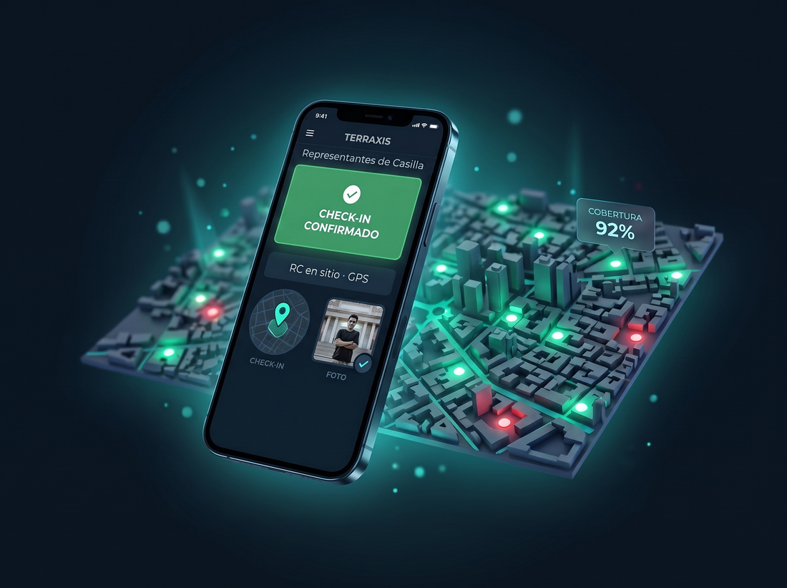
Cada incidencia se vuelve prueba. Cada prueba, defensa del voto.
Un representante detecta una anomalía y la reporta desde el mapa en vivo: foto, hora y ubicación exacta. En segundos deja de ser un rumor y se convierte en evidencia georreferenciada.
La IA redacta el escrito o la denuncia con esos datos y adjunta las pruebas; después, un abogado electoral capacitado confirma los hechos y complementa el escrito para la autoridad. No defiendes el voto con quejas, sino con pruebas.
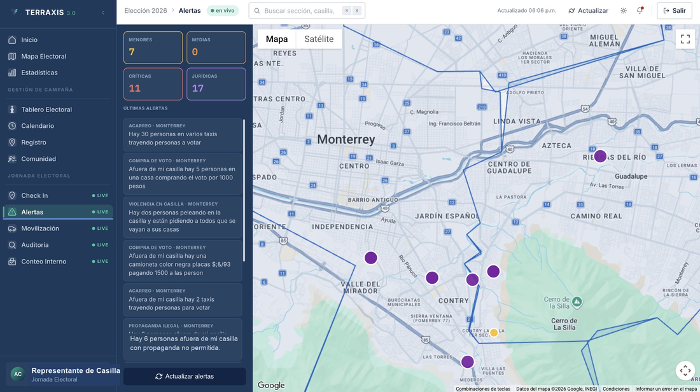
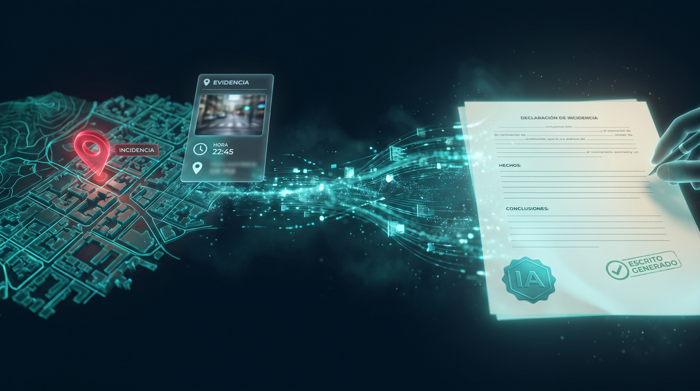
Movilización Territorial
Identifica a los promovidos que faltan por votar y arma rutas y recursos en tiempo real: cada esfuerzo se dirige a donde más suma, sin desperdiciar hora ni gente.
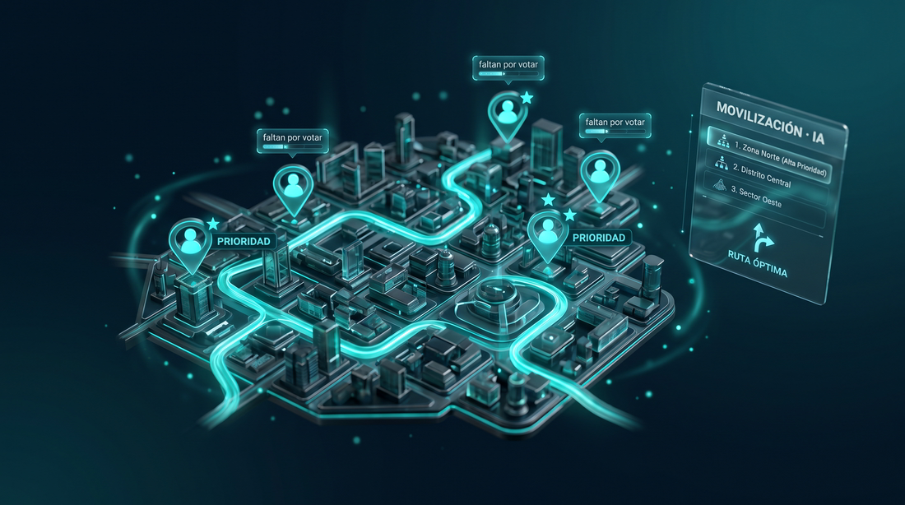
Lectura Automática de Resultados
La IA lee el acta y arma tu conteo rápido interno y de auditoría, sección por sección: tienes tu resultado y detectas diferencias antes que nadie.
La infraestructura de inteligencia y operación sobre el territorio.
Una empresa GovTech que integra —en una sola plataforma— analítica geoespacial, inteligencia electoral, automatización e IA. No es "otro software": es el eje que conecta territorio, información y decisión.
Inteligencia Electoral y Territorial
- Resultados históricos y análisis con IA
- Mapas de calor y estrategia de campaña
- Dashboard en tiempo real para búnker
Gestión de Campaña
- Geolocalización y auditoría de eventos y recursos
- Agenda inteligente, registro y ChatBot 24/7
- Fiscalización y contabilidad en tiempo real
Jornada Electoral
- Registro y auditoría de representantes de casilla
- Incidencias georreferenciadas y escritos con IA
- Movilización con IA y lectura de resultados
Consultoría Política
- Encuestas de campo auditables y marketing político
- Imagen de candidato, videos, discursos y contenido
- Optimización inteligente de pauta geolocalizada
Software, ley y estrategia. Un solo equipo, de tu lado.

Desarrolladores de Software
La plataforma y la IA, a tu medida.
Abogados Electorales
Defensa jurídica del voto con abogados expertos.
Consultores Políticos
Estrategia de campaña que gana.
Agenda tu demo
Te mostramos la plataforma con tu propio territorio y te entregamos un análisis electoral.
Diagnóstico y cotización a la medida
Según tu elección: municipal, estatal o federal.
Piloto y despliegue
Arrancamos contigo, incluso desde la precampaña.
Inteligencia para ganar, gobernar y transformar.
Deja de operar a ciegas. Obtén la seguridad, eficiencia, orden, inteligencia y transparencia que tu campaña merece.
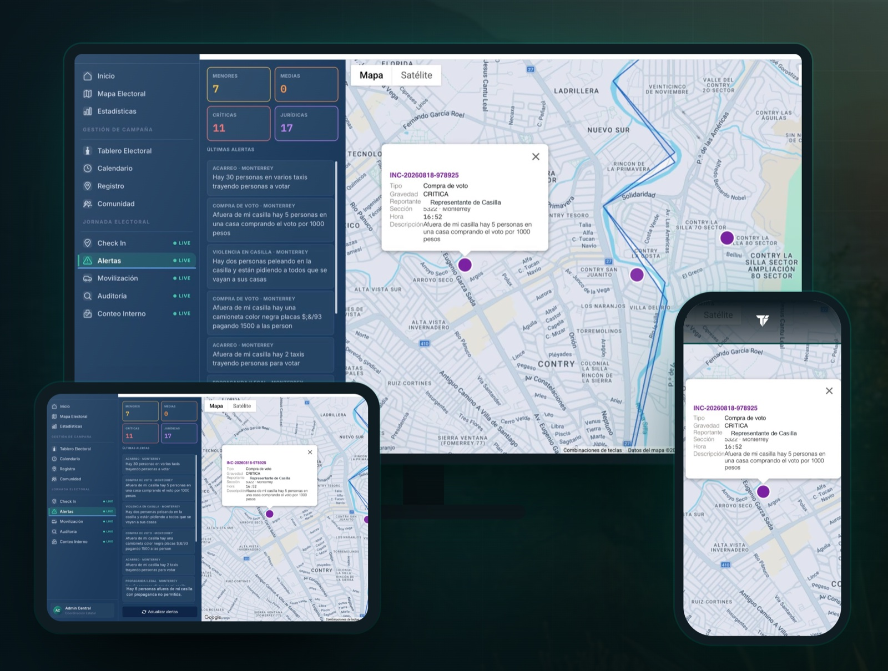